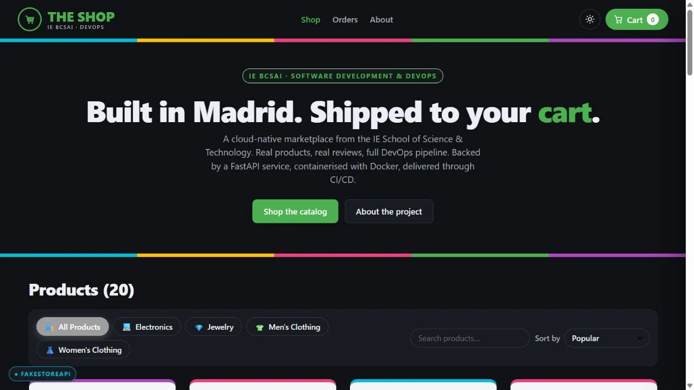

Software & Web2025
The Shop
One storefront, from the first browse to the demo order.
See it in action
Project preview
A view of the working project. Open the demo to explore it.
The challenge
Give a team marketplace capstone a coherent shopping experience while preserving its backend contract.
The idea
A responsive storefront that connects product discovery, cart updates and checkout through one visual system.
The build
Rebuilt the frontend with React and Vite around the reference FastAPI endpoints. A cart drawer, category search and dark mode support the journey; demo data keeps it usable without a backend.
What came out of it
A deployed frontend with an end-to-end demo order flow and automatic GitHub Pages deployment. Payments are simulated. The reference backend and API design belong to the capstone team.
More technical detail in the project repository. Implementation notes ↗